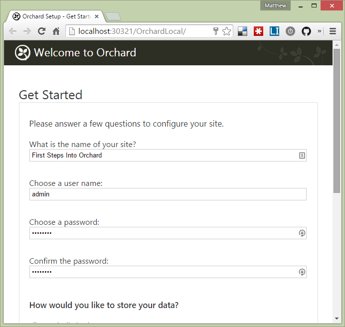
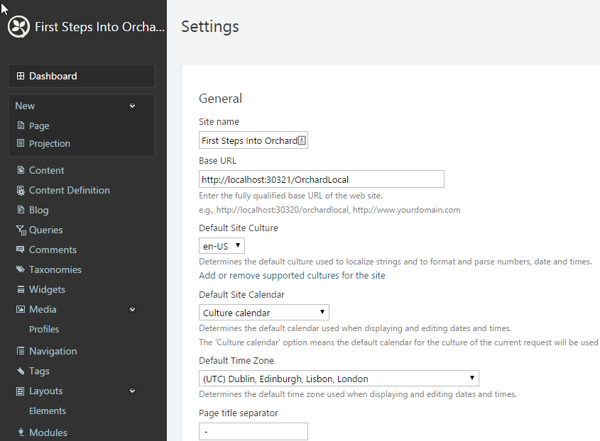
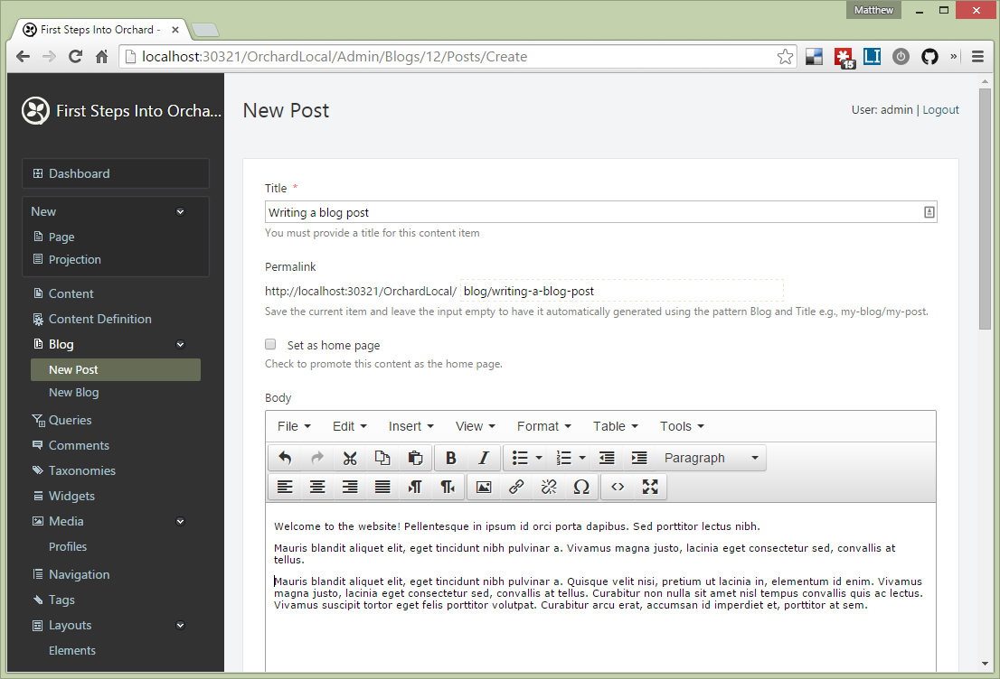
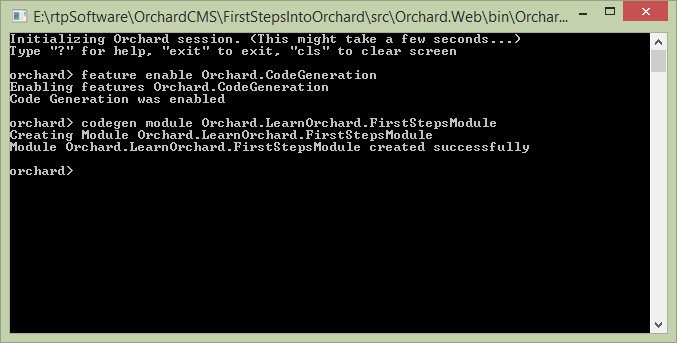
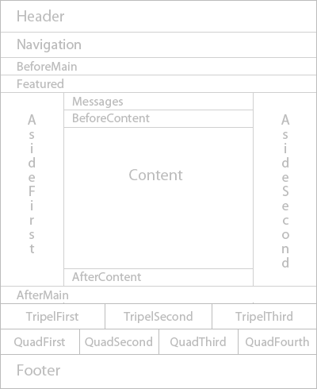
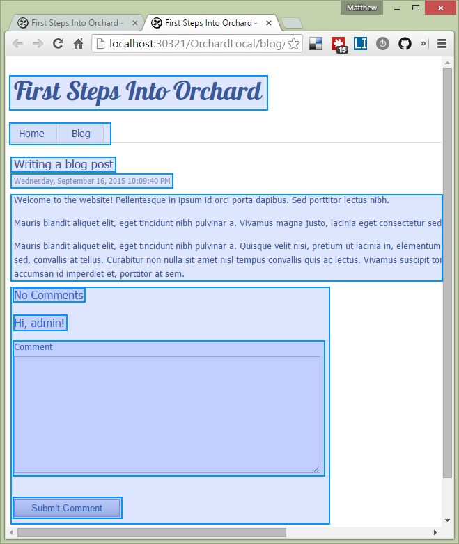
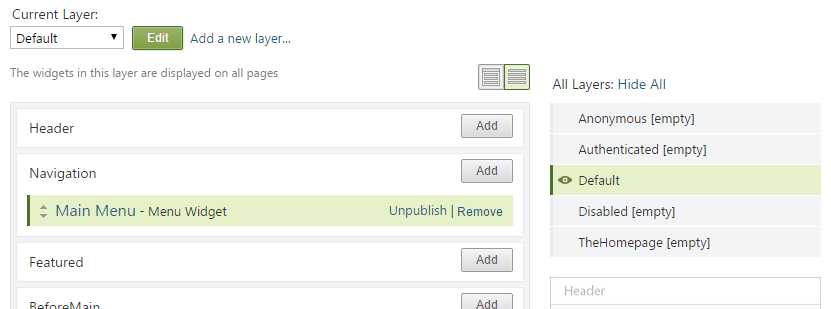

The goal of this article is to ease you into Orchard. There are so many concepts to understand that I think it is necessary to give a high level view of the whole thing before digging in. So, this article starts with a common ground that any web user should understand and progressively deepens while introducing relevant technical terms.
When you finish reading this, you should have a good enough understanding to start playing with Orchard (as a designer/developer) without getting confused by its high level architecture and its terminology. When introduced, each new term is put in bold so that you make sure to understand it before moving forward.
This article also contains a lot of links to other pages with more specific explanation; so you can use it as a starting point. To answer some general questions about what Orchard is and where it comes from, read the Frequently Asked Questions. For a more technical presentation, read How Orchard works.
Looking at Orchard as...
The best way to introduce the basics of Orchard is to look at the roles that a user can have when access it: normal user (aka reader/visitor/guest), administrator, designer and developer.
User
As a user, an Orchard website is just like any website: It starts with a front page, from which you can access other pages by following links. Depending on what the website is about, the content will vary (can be static pages, blog, wiki, e-commerce, etc.)
Administrator
The administrator has access to a few more aspects of the website:
-
When installing Orchard, they will see the installation page. This step results in the creation of a database where all the content and settings of the website are stored.

-
Of course, as users, they can see the front-end as well
-
They can open the dashboard (aka control panel/back-end) for two reasons:
- Configure the website: Edit settings around the behavior and look of the website (or install/disable/upgrade them)

- Edit the content of the website

-
Command line: It is possible to script most admin stuff from the command line, making it easy to automate certain operations.

Designer
The designer can modify the look of the website. He can edit the settings of an existing theme (if provided) or create one. A theme is everything that plays in the visual representation of the website. It is sometimes called skin or template. It transforms the content (user-generated data) into HTML that can be displayed in a browser. Eg: When you write a blog post, the theme defines where and how to show the menu, title, body, comments, etc.
Depending on how much customization is required, the designer may edit some or all elements of the theme. These elements are of the following types:
-
Documents defining the layout and its zones: This is the overall representation of a page on the website (without any actual content). Eg: It says if the website should have one, two or three columns. So, a zone is a container that is part of the layout and ready to receive any content. Note that a flexible theme (like the one provided by Orchard) can adapt to hide empty zones. So, although Figure 6 shows a lot of zones, most of them will not be visible on actual pages because they aren't being used.

-
Views: Visual representation of a specific content. A view is typically a file with the extension .CSHTML or .ASPX. It provides the HTML code to use when displaying a specific type of content. So, a page with many contents (menu, blog post, comments, etc) will be created by using the composition of all the relevant individual views.

-
Stylesheets, Javascript and Media files: They are used to modify the look defined in the views. They are files like "Site.css", jQuery or the images for background, borders and icons
-
Widget: A web page typically presents one main content (like a blog post), but it often also has small pieces of information on the sides. Eg: a tag cloud, a list of recent posts, a twitter feed, etc
-
Layers and the binding between content to specific zones: A layer is like the description of a group of pages. Once defined, you can tell where to put each content (or widget). Eg: A layer grouping all the blog posts can be defined, then we can make a Tag cloud widget appear on the side.

More advanced themes may also include some programming code to further customize the look.
Developer
The developer has a complete insight of the architecture of Orchard and can extend it.
Orchard is organized in modules. Each module provides a building block (aka add on/plugin) to the website with a high level distinct goal. For example, you can have:
-
Extension module: Adds some (low-level) features that will benefit the website. Eg: Ability to search your content or to use an external editor to write blog posts (like Live Writer)
-
Content module: Adds everything (code and visual) required to view/edit some type of content (like blog posts)
-
Widget module: Adds a small visual content that can be displayed on the side of existing content modules (like a Tag cloud next to a blog)
-
Element module: Adds a small contained element for use in the Orchard.Layouts module, a core module that lets you design page layouts in the browser.
-
Theme module: Changes the look of existing content modules (This is what the designer would typically create)
-
All the above: A module can have many extensions, content types, widgets and themes all in one package
Orchard is designed to be highly extensible; this means that almost anything that you interact with can be extended, replaced or disabled. Out of the box, Orchard comes with a number of modules to provide a good user/administrator experience; but a designer/developer can change them or create more. It is also possible to share your modules with the Orchard community and to install modules developed by others.
Orchard comes with only one theme (called "The Theme Machine"). However, it has enough zones to allow various arrangements. This is important because a site can only have one theme active at a time. This means the theme must be flexible enough to allow pages to have different layouts. If you are not satisfied, you can copy it and add more zones.
The Orchard Gallery contains a lot more themes and modules ready to install. Make sure to browse it to find out what extra features are available.
Content
In order to fill your website, Orchard allows you to edit and display content. It comes with the ability to create pages and blog posts out of the box. But it also allows you to define your own content. This is important because you may want to have events or profiles or anything else that isn't supported out of the box. This section explains the various elements that plays into providing that capability.
-
Content: Data that is typically displayed on the front-end website. I use this term as a generic way of calling anything that is user-generated.
-
Content Type & Item: A content type is like a dynamic class; it defines a structure of data for a specific type of content. That structure can be changed, even by the administrator. A content item is an instance of content type. So, BlogPost can be a content type, and when you write one, that one is a content item.
-
Content Part: Because many content types share many aspects; these aspects can be created independently and reused in each content type. That's what a content part is. Eg: A blog post can have comments; a photo can also have comments; so, instead of implementing the "comments" feature twice, we can create it as a content part and reuse it for both content types.
-
Content Field: In the same spirit of reusability, we can have smaller types that must behave in a certain way. Eg: Most content types will need Date, phone number, email address, etc. They aren't simple properties since we can attach some behavior (like validation rules) but they aren't content parts either (too "small").
- Record: In order to be able to save a content type/part (in a SQL database), it needs to be "linked" to a record. It is a class with all the properties that should be saved. Eg: A Map part must save its coordinates (Latitude & Longitude), so it will be linked to a record with these two properties; and Orchard will do the rest to load/save it. You will not have to deal with records unless you develop your own module. But it is useful to understand this concept in case you encounter it.
- Record: In order to be able to save a content type/part (in a database), it needs to be "linked" to a record. It is a class with all the properties that should be saved. Eg: A Map part must save its coordinates (Latitude & Longitude), so it will be linked to a record with these two properties; and Orchard will do the rest to load/save it. You will not have to deal with records unless you develop your own module. But it is useful to understand this concept in case you encounter it.
Note that a content type can only have one of each kind of content parts. But it can have many fields of the same kind. The reason is in the semantic meaning of these concepts. For example, a blog post can only have one commenting aspect and it can have many dates (creation date, last update date, etc.).
Since Orchard is an open source project, feel free to contribute any feature/module you would like.
Conclusion
We are going to stop here. At this point, you should have a good understanding of what is Orchard. The next step is to get into a bit more details about modules, themes and the low-level architecture of Orchard. This would be useful when you start learning how to extend Orchard.